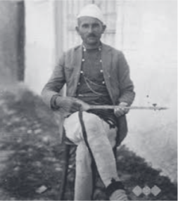
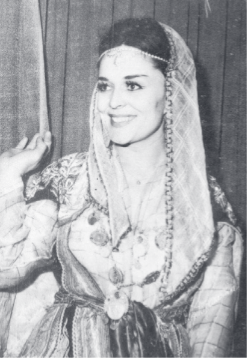
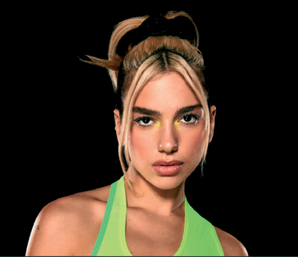

Jeta në Kosovë dikur dhe sot
Kultura - pasuri kombëtare
Grupi i tretë: Muzika në Kosovë
Muzika është pjesë e kulturës së një populli. Në Kosovë fillimisht ishte e zhvilluar muzika folklorike, popullore e më pas u zhvilluan edhe zhanret e tjera, si: muzika klasike, moderne e të tjera.

Ymer Riza ishte njëri prej këngëtarëve të parë shqiptarë të muzikës popullore me sharki e çifteli. Ai u konsiderua si legjenda e folklorit shqiptar.

Nexhmije Pagarusha, këngëtare e muzikës popullore dhe e operës. Ajo ishte edhe aktore e suksesshme në film dhe në teatër. Njihet si Bilbili i Kosovës dhe Mbretëresha e muzikës shqiptare.
Këngëtaret me prejardhje nga vendi ynë, që janë bërë shumë të famshme dhe kanë arritur sukses të madh nëpër botë, janë Rita Ora dhe Dua Lipa.
Rita Ora
